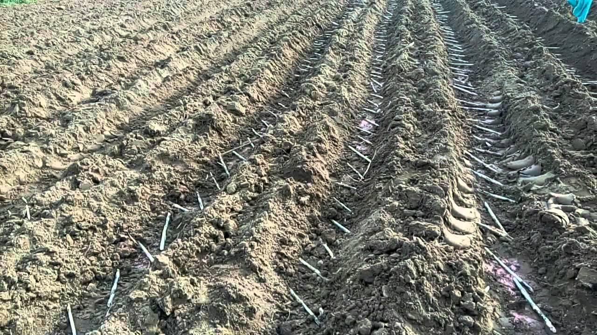
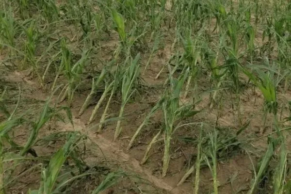
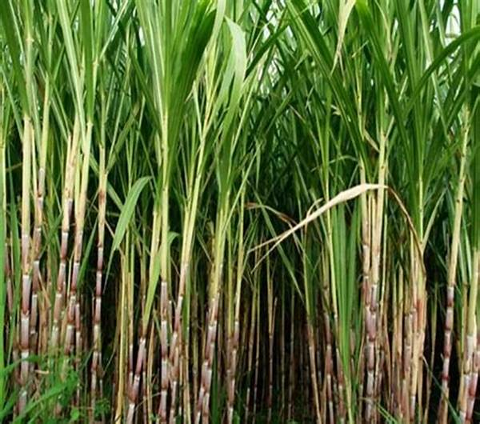
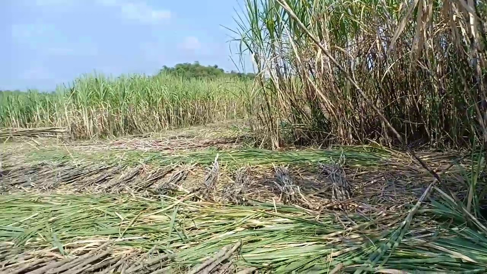
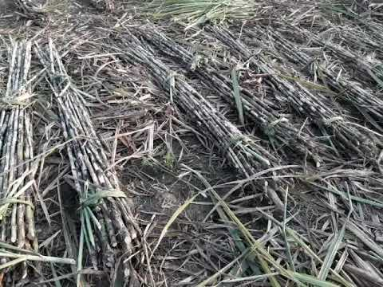

गन्ने की खेती और रोग रोकथाम





गन्ने की खेती के लिए उपयुक्त जलवायु जैसा की आप जानते है की गन्ने की खेती (Ganne ki Kheti)अक्टूबर से नम्बर तथा फरवरी से मार्च के माह में होता है
इसलिए गन्ने की खेती Ganne ki Kheti के लिए उपयुक्त जलवायु गर्म मानी गयी है
या फिर आप ये समझ लीजिये की गन्ने की खेती के लिए वातावरण का तापमान 26 से 32 डिग्री सेल्सियस के बिच होना चाहिए
इस तापमान पर गन्ने की खेती में कोई परेशानी नहीं होती है और गन्ने की पौधे को विकास एवं वृद्धि के लिए यह तापमान आवश्य्क है
इस तापमान पर गन्ने की पैदावार अधिक होती है ।गन्ने की खेती के लिए चिकनी दोमट मिटटी अच्छी मानी जाती है
क्योकि इस मिटटी में जल निकास अच्छे से होता है और गनी की फसल के फसल के लिए जल निकासा अति महत्वपूर्ण है
चिकनी दोमट मिटटी में काफी मात्रा में जीवाश्म पाए जाते है और इस मिटटी की उर्वरता शक्ति बनी रहती हैं
जिससे इस मिटटी में बोई गयी फसल को अधिक पैदावार देती है अधिकतर किसान भाई इसी मिटटी में गन्ने की खेती करते है और अधिक उपज प्राप्त करते है ,
गन्ने की खेत की तैयारी के लिए किसान भाई जब खरीफ की फसल काटने के बाद जिस खेत में गन्ने की खेती Ganne ki Kheti करनी हो
उस खेत की गहरी जुताई करवा दे यह गहरी जुताई मिटटी पलट हल से करवा लेनी चाहिए या फिर देसी हल या कल्टीवेटर से जुताई करके कस्मे पाटा लगवा ले
और खेत की ऐसी जुताई होनी चाहिए जिससे खेत की मिटटी भुरभुरी हो जाये और खेत भी समतल हो जाए क्योकि गन्ने की खेती के लिए खेत का समतल होना जरुरी है ।
किसान दोस्तों गन्ने की बुआई का समय अक्टूबर और नवंबर के शारद ऋतू में की जाती है
यह फरवरी और मार्च के माह में यानी बसंत ऋतू में बोया जाता है गन्ने की बुआई आप दोनों माह में कर सकते है
लेकिन शारद ऋतू में गन्ने की बुआई करने से पैदावार अधिक होती है यानी की बसंत ऋतू के अपेक्षा शारद ऋतू में बुआई करने से 20 से 25 उपज अधिक मिलता है ।
गन्ने की बीज की तैयारी
किसान दोस्त आप जिस खेत से गन्ने का बीज लेना हो उस खेत में उर्वरक उपयुक्त मात्रा में डालनी चाहिए
जिससे उस खेत का गन्ना निरोगी हो यदि आप गन्ने की ऊपरी भाग को उपयोग में ला रहे है तो यह सबसे अच्छी बात है क्योकि गन्ने की ऊपरी भाग को अंकुरण होने
में समय नहीं लगता है जिससे अधिक अंकुरण होता है गन्ने की तीन आँख वाले भाग को काट देना चाहिए गन्ने के 40 हजार दुकड़े प्रति हेक्टेयर के लिए काफी है
गन्ने को बोन से पहले कवक नाशी से उपचारित कर ले ।
गन्ने की बुआई
किसान दोस्तों आप गन्ने की बुआई मुख्यतः समतल व नाली विधि से कर सकते है गन्ने की बुआई के लिए समतल विधि में देशी हल से 90 सेंटीमीटर की दुरी पर कुलो का निर्माण कर ले
कुलो में गन्ने की छोटे छोटे टुकड़ो को यानि जिसमे 2 आँख हो उसे सिरे से सिरे मिलाकर बुआई कर दे ।
नाली विधि में गन्ने की बुआई 90 सेंटीमीटर की दुरी पर 45 सेंटीमीटर चौड़ी नाली बना ली जाती है और नाली में बीज को सिर से सिरे मिलाकर बुआई कर दे
फिर उसके बाद गन्ने के बीज को मट्टी से दबा दे ।
गन्ने की बीज की मात्रा
किसान दोस्तों आप गन्ने की बुआई मुख्यतः समतल व नाली विधि से कर सकते है गन्ने की बुआई के लिए समतल विधि में देशी हल से 90 सेंटीमीटर की दुरी पर कुलो का निर्माण कर ले
कुलो में गन्ने की छोटे छोटे टुकड़ो को यानि जिसमे 2 आँख हो उसे सिरे से सिरे मिलाकर बुआई कर दे ।
नाली विधि में गन्ने की बुआई 90 सेंटीमीटर की दुरी पर 45 सेंटीमीटर चौड़ी नाली बना ली जाती है और नाली में बीज को सिर से सिरे मिलाकर बुआई कर दे
फिर उसके बाद गन्ने के बीज को मट्टी से दबा दे ।
गन्ने की बीज की मात्रा
शीघ्र से पकने वाली किस्मो के लिए – शीघ्र से पकने वाली किस्मो के लिए गन्ने की बीज की मात्रा 70 से 75 किवंटल प्रति हेक्टेयर की दर से आवश्य्क होती है
जिसमे गन्ने के कुल टुकड़े 35 से 40 हजार तक होते है ।
मध्यम एवं देर से पकने वाली किस्मो के लिए – मध्यम एवं देर से पकने वाली किस्मो के लिए 60 से 65 किवंटल प्रति हेक्टेयर की दर से आवश्य्क होती है
जिसमे गन्ने के बीज के कुल टुकड़े लगभग 30 से 35 हजार तक होंगे ।
गन्ने के बीजोपचार
गन्ने की बीज को बोन से पहले गन्ने को उपचारित कर लेना चाहिए गन्ने के टुकड़ो को
10 मिनट तक बविस्टन 100 ग्राम एवं मेलाथियान 300 मिली को 100 लीटर पानी में घोल बनाकर उपचारित करे ।
गन्ने की फसल के लिए खाद एवं उर्वरको की मात्रा
गन्ने की फसल से अधिक पैदावार करना चाहते है तो आप गन्ने की बीज की बुआई करने से पहले खेत में 5 से 6 टन पूरी तरह से सदी हुयी गोबर की खाद को मिला दे
या फिर आप इसके आलावा 250 किलोग्राम नाइट्रोजन , 80 से 90 किलोग्राम फास्फोरा , व 50 से 60 किलोग्राम पोटाश प्रति हेक्टेयर की दर से खेत में मिला दे
नाइट्रोजन को तीन बराबर भाग को बीज बोन के समय 30 दिन 90 दिन और 120 दिन बाद खेतो में डाले और फसल पर मिटटी चढ़ाते रहे यदि खेत में जस्ते की कमी हो
तो गन्ने की बुआई के साथ 25 किलोग्राम जिंक सल्फेट प्रति हेक्टेयर की दर से जरूर डाले ।
गन्ने की फसल की सिंचाई
जैसा की सभी किसान भाई जानते है की गन्ने की फसल को अधिक सिंचाई की जरूरत नहीं पड़ती है फिर भी गन्ने की फसल को फसल बोन के समय ,
कल्ले निकलने के समय , और बढ़वार यानि जब गन्ने की वृद्धि के समय खेत में उचित मात्रा में नमि होनी चाहिए किसान भाई गन्ने की फसल की सिंचाई
के लिए खेत को छोटे छोटे क्यारियों में बाट ले फिर उसकी सिंचाई करे
जिससे सिंचाई करने में आसानी होगी ।
गन्ने की फसल में खरपतवारो का नियंत्रण
गन्ने की फसल में खरपतवारो का नियंत्रण होना जरुरी है क्योकि खरपतवारो से फसल ख़राब हो जाती है और अधिक पैदावार नहीं होती है
खरपतवारो के नियंत्रण के लिए गन्ने की बीज बोन के 25 से 30 दिनों के अंतराल पर तीन बार गुड़ाई करके खरपतवारो पर नियंत्रण पाया जा सकता है
किसान दोस्तों आप रसायनो का प्रयोग करके खरपतवारो को नियंत्रण में नहीं कर पाएंगे गणना बोन के तुरंत बाद एट्राजिन तथा
सेंकर का 1 किग्रा सक्रिय पदार्थ 1000 लीटर पानी में घोल बनाकर खरपतवर होने
की संभावना में छिड़काव कर दे ।
गन्ने की फसल में रोगो की रोकथाम कैसे करे
गन्ने की फसल में रोग मुख्यतः गन्ने की बीज द्वारा ही लगते है जो निचे निम्न दिया गया हैin तरीको को अपनाकर गन्ने की फसल में लगने वाले रोगो की रोकथाम कर सकते है –
सबसे पहली बाट तो गन्ने की बीज को स्वस्थ्य एवं प्रमाणित बीज ही ले
गन्ने के बीज के दुकाते को काटते समय लाल पिले रंग एवं गांठे को निकल ले तथा सूखे टुकड़ो को अलग कर ले
गन्ने की बीज को ट्राईकोडर्मा की 10 ग्राम मात्रा को प्रति लीटर पानी में घोल बनाकर उसे उपचारित कर ले फिर उसे बोये
गन्ने की फसल को उस खेत में ना बोये जिस खेत में रोग लगे हो 2 से 3 साल बाद ही उस खेत में गन्ने को बोये ।
गन्ने की फसल में लगने वाले कीटो का रोकथाम कैसे करे
गन्ने की फसल में लगे हुए दीमक अंकुरबेधक की रोकथाम के लिए क्लोरोपाईरिफास 4 लीटर प्रति हेक्टेयर की दर 1200 से 1300 लीटर पानी में घोल
बनाकर हजारे की सहायता से कूदो में बुआई के बाद छिड़काव कर देनी चाहिए
छोटी बेधक की पहली पीढ़ी एवं काली चिट्टा आदि कीटो की रोकथाम के लिए मोनोक्रोटोफास 1 मिली प्रति लीटर के पानी में घोल बनाकर छिड़काव करे
चोटीबेधक की तीसरी पीढ़ी के कीटो के रोकथाम के लिए 25 किलोग्राम प्रति हेक्टेयर की दर
से फ्लूरादान को सुखी राख में मिलाकर बिखेर दे और फसल की सिंचाई कर दे
गन्ने की फसल को गिरने से बचाने के उपाय
गन्ने की फसल को गिरने से बचाने के उपाय निचे प्रक्रिया द्वारा दी गयी है –
खेत में गन्ना की कतरो की दिशा पूर्व से पश्चिम ही रखे
किसान दोस्तों गन्ना की उथली बुआई ना करे
गन्ना की फसल के कतार के दोनों तरफ 15 से 30 सेंटीमीटर मिटटी दो बार जब गन्ना का पौधा 1.30
से 2.0 मीटर हो यानी 120 दिन बाद तथा इससे अधिक बढ़वार होने पर 150 दिन बाद मिटटी को चढ़ाये ।
किसानो भाईयो आप गन्ने की फसल को बँधायी करे यानी की इसमें तनो को एक साथ मिलाकर
पत्तियों के सहारे बांध दे यह करीबन 2 बार जरूर ही करे और एक बाट का ध्यान रहे की गन्ने
की फसल की हरी पत्तिया एक साथ एकत्रित न हो जिससे प्रकाश संश्लेण प्रभावित न हो
गन्ने की कटाई कब करे
किसानो बंधुओ आप गन्ने की कटाई तब जब गन्ने की डंठे में चीनी की मात्रा अधिक हो जाये यानि की गन्ने का पौधे में मिठास आ जाये या
फिर गन्ने को चूसने पर मीठा लगे तथा गन्ने की कटाई आप नवंबर के अंत से लेकर मार्च अप्रैल तक की जाती है ।